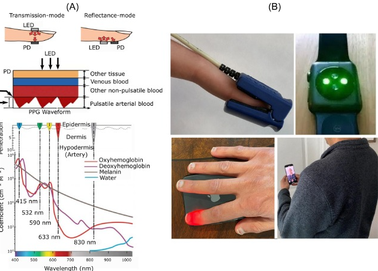

Older Adults Health Monitoring
Learning outcomes
- Understand the challenges and opportunities of health monitoring for older adults
- Learn about different types of health monitoring technologies and their applications
- Explore the ethical considerations and future perspectives of health monitoring for older adults
Aging Society
Population aging
{kind=link}
Challenges - physical frailty
A practical challenges is decline of function along with aging
- Physical
- Reduce muscle mass
- Lower bone density
- Cognitive
- Reduce processing speed
- Reduce working memory
- Reduce execution speed
- Consequence
- Prone to injury

Challenges - caregiver burnout
Taking care of a people could result in
- Physical burnout
- Physical exhaustion
- Somatic symptoms
- Mental burnout
- Stress
- Depression
{kind=link}
Healthy aging
Definition: Developing and maintaining functional ability
- Functional ability
- Meet basic needs
- Learn,grow, and make decision
- mobility
- Build and maintain relationship
- Contribute to society

Health monitoring of older adults
Health monitoring of older adults
- Technology could help
- Extend healthy aging duration
- Lowered threshold to achieve functional ability

Older adults health monitoring
Health monitoring assist older adults life in
Older adult health
- Continuous monitoring leads to
- Early prevention
- Chronic condition management
Caregiver perspective
- Reduced caring burden
- Easier health information management
- Remote management

Wearable devices
Wearable devices monitoring
- Cardiovascular health
- Heart rate
- Blood pressure
- Electrocardiogram (ECG)
- Respiratory health
- Blood oxygen level
- Respiratory rate
- Activities
- Exercise
- Sleep
Sensor technology
Photoplethysmography

Accelerometer
ECG
Domestic health monitoring machines for targeted purpose
Spirometry
- Pulmonary functional test
- Monitoring chronic pulmonary disease (COPD, asthma)
{kind=link}
{kind=link}
{kind=link}
{kind=link}
Consideration of using wearable devices
- Data formatting
- Interpretation of measured data
- Integration of different data modality
- Android Health connect
- Apple Health


Ambient assisted living
The other type of older adults monitoring is environmental monitoring
- Camera
- Fall
- Gas
- Smoke
- Air Quality
- Humidity
- Light
- Temperature
{kind=link}
AI-enabled monitoring
The problem of the simply monitoring is that we don’t take further steps.
Rule-based automation
Popular options include IFTTT (if this, then that) or Apple/Google Home built-in rule-based automation
- Example
- IF “Temperature > 26”
- Then “Turn on Air con”
LLM-enabled home automation
- Incorporate personal records, behavior to execute actions
- Lowered coding requirements for automation
Online-offline collaboration
The other type of monitor-to-action is connecting to offline supports
Healthcare systems
- Reporting health monitoring records for clinician as extra evidence
- Emergency calling for stroke, fall events
{kind=link}
Social support
- Connecting to social services
- Emergency call service (平安鐘)
{kind=link}
Implementation aspects
Accepting new technology
Older adults are usually less accepting of new technology
Factors affect older adults’ attitude toward new technology
- Perceived usefulness
- Perceived ease of use
The actual usefulness is not the key. The key is to facilitate older adults perceive its usefulness
Implementation
Some useful way to increase adoption rate of health monitoring technology
- Active communication with older adults
- Incentives
- Peer / authoritative engagement
User interface design
- Simple and intuitive interface for older adults
- Clear and concise information display
In-class reading: FDA issues safety alert on Trividia blood glucose monitors
Guided questions:
- What are the difference between original instruction and revised instruction
- What are the potential consequences of the original instruction?
- Regulatory strategy for health monitoring devices, is the safety of the device is the only concern?
- Business perspectives: What are other ways to fix the error, and what are the potential costs?
Ethical consideration
- Privacy vs. Safety Trade-off
- How much privacy are we willing to sacrifice for safety?
- Data ownership
- Who owns the health data
- Older adults
- Caregiver
- Child
- Device company
- Who owns the health data
Future perspective
- LLM integration
- Mental health
- More non-intrusive monitoring devices
Design your own scenario
The other type of monitor-to-action is connecting to offline supports
- Profile: Mrs. Lin, 78 years old
- Living situation: living alone in an apartment
- Two adult children live overseas
- Mobility: Walking slow, need to use a cane
- Cognition: Occasionally forget things
- Health: Managed hypertension and diabetes, early-stage hearing loss
Problem
Her children are increasingly anxious. After the recent slip in the kitchen, they want to hire a full-time domestic helper, but Mrs. Lin refuses.
- What are the potential biological signs could be monitored
- What are the potential house sensor could be installed to increase home safety
- After installing 1. and 2. what are the potential action we can do if something happens?